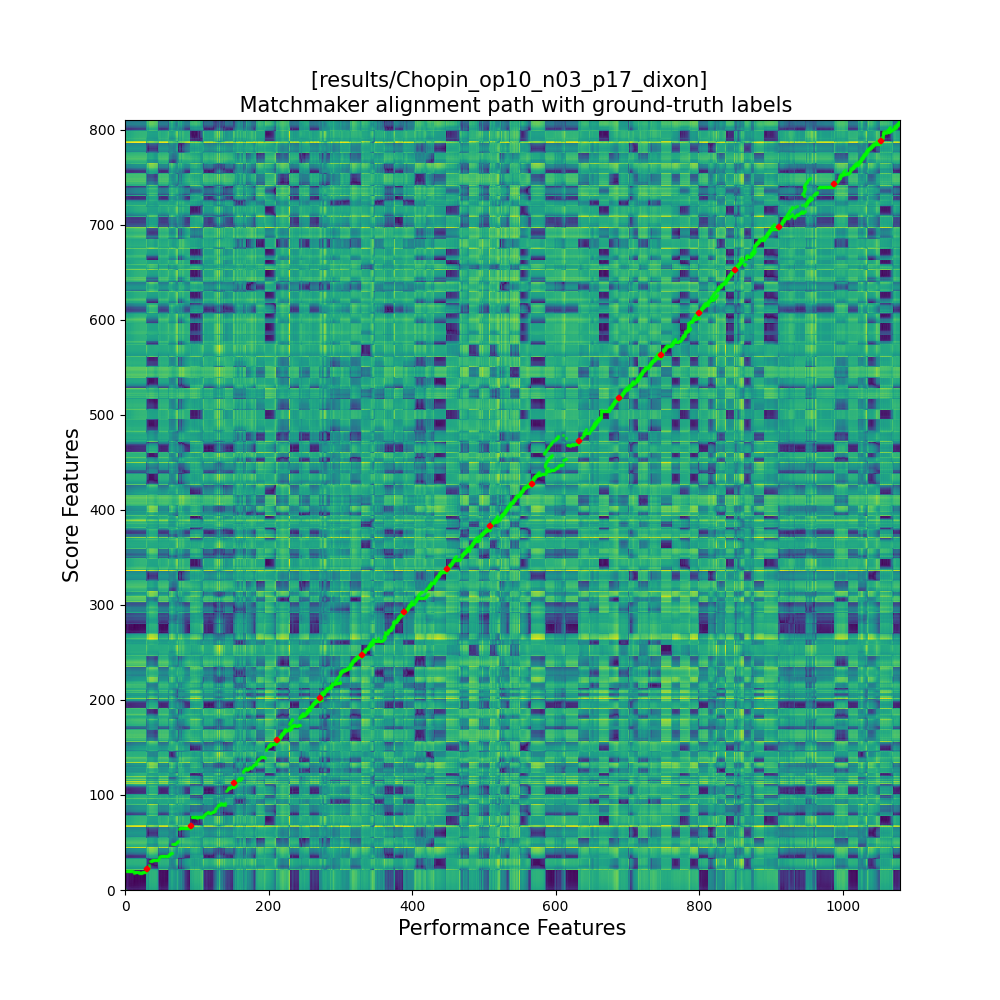
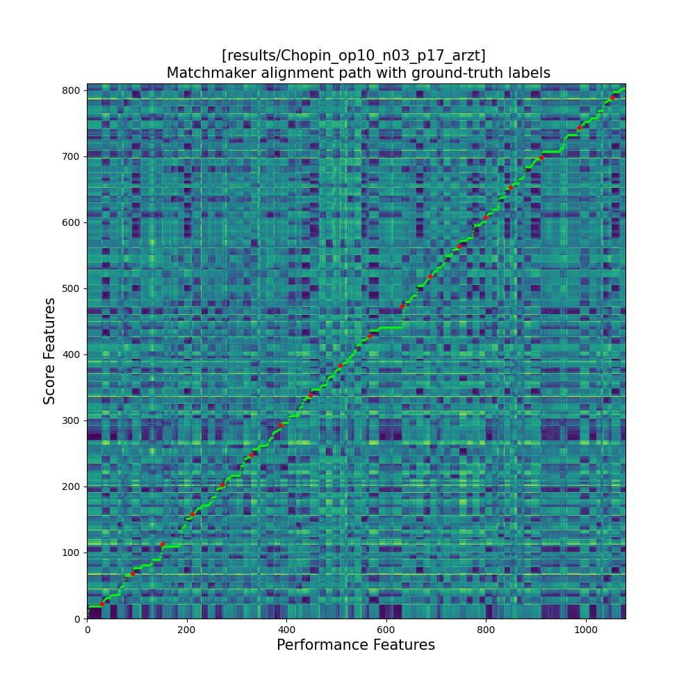
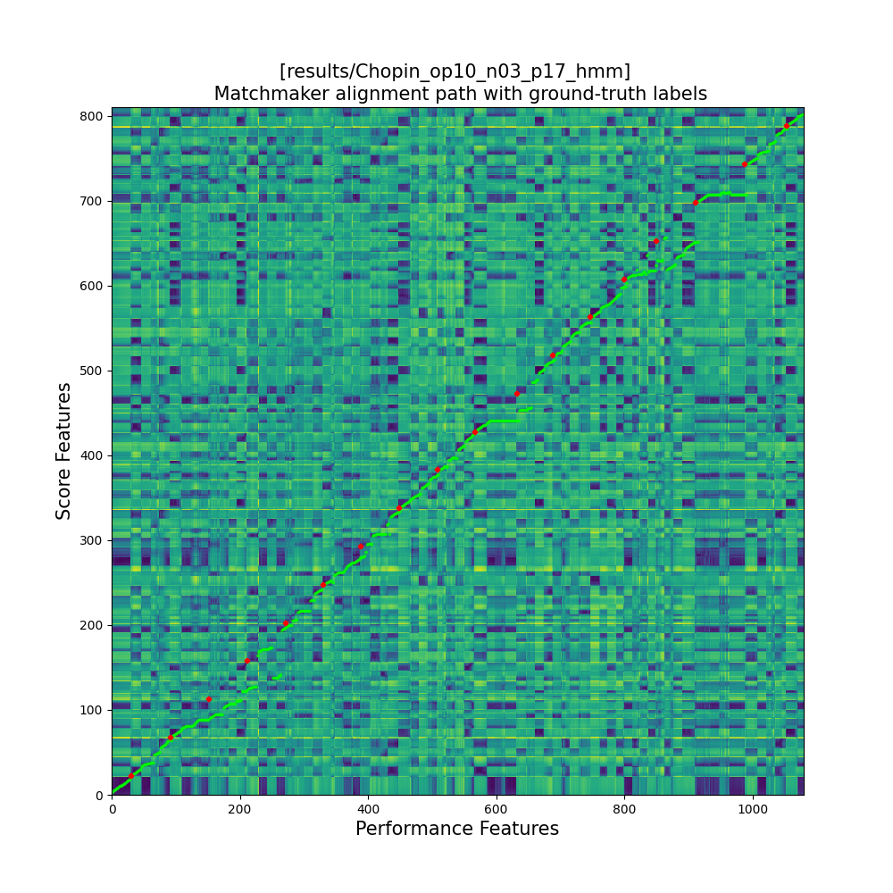
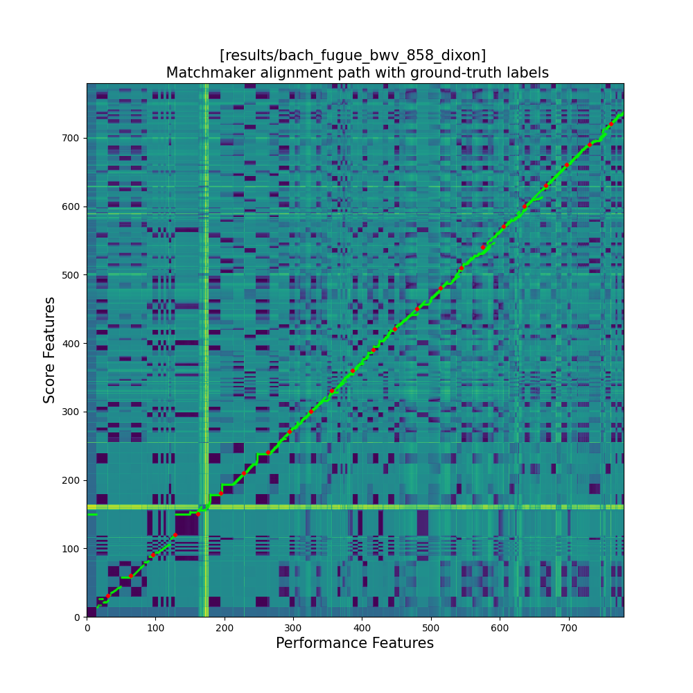
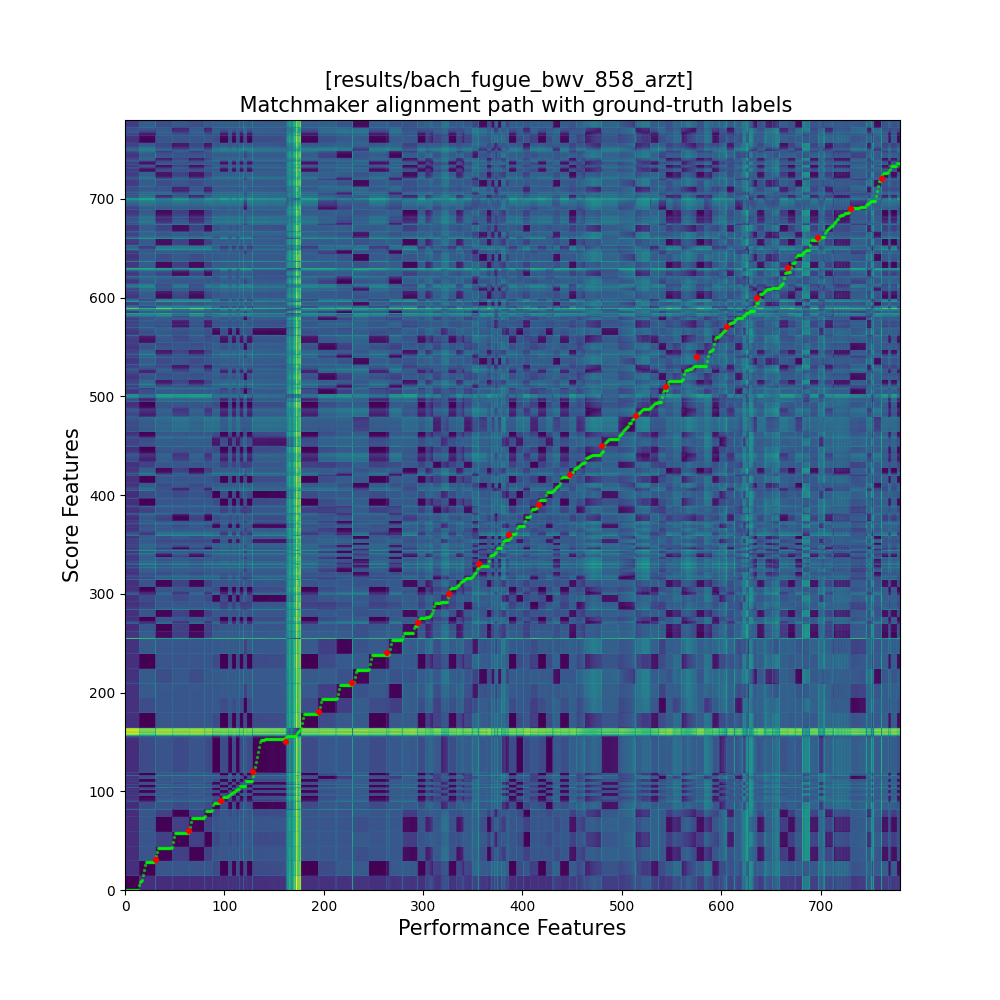
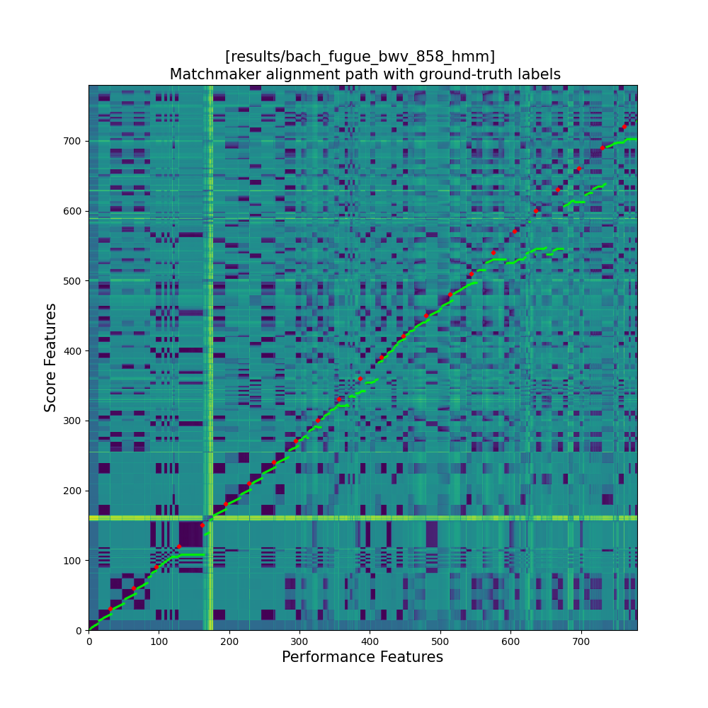
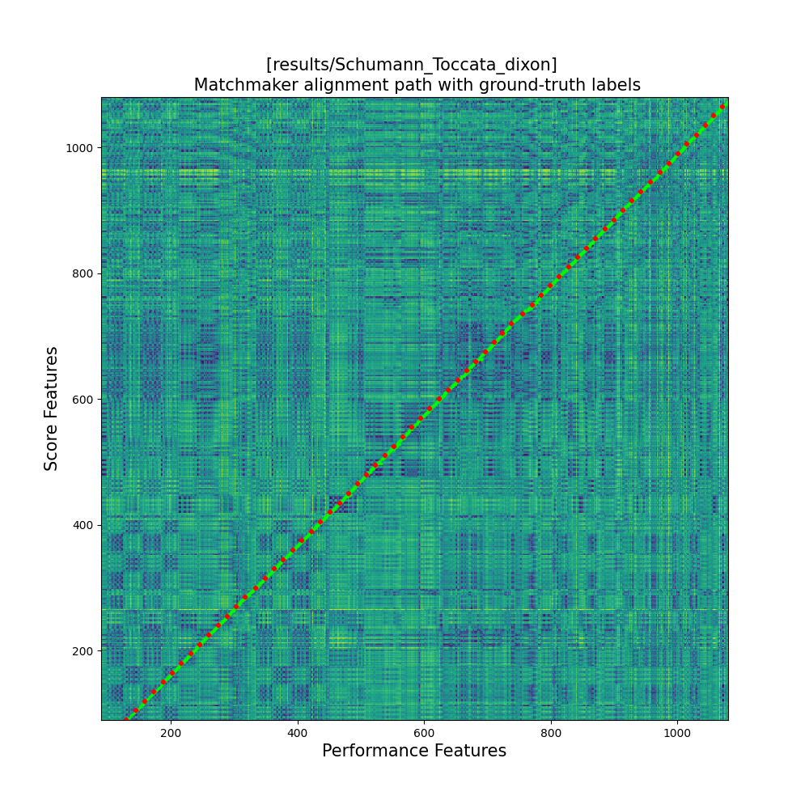
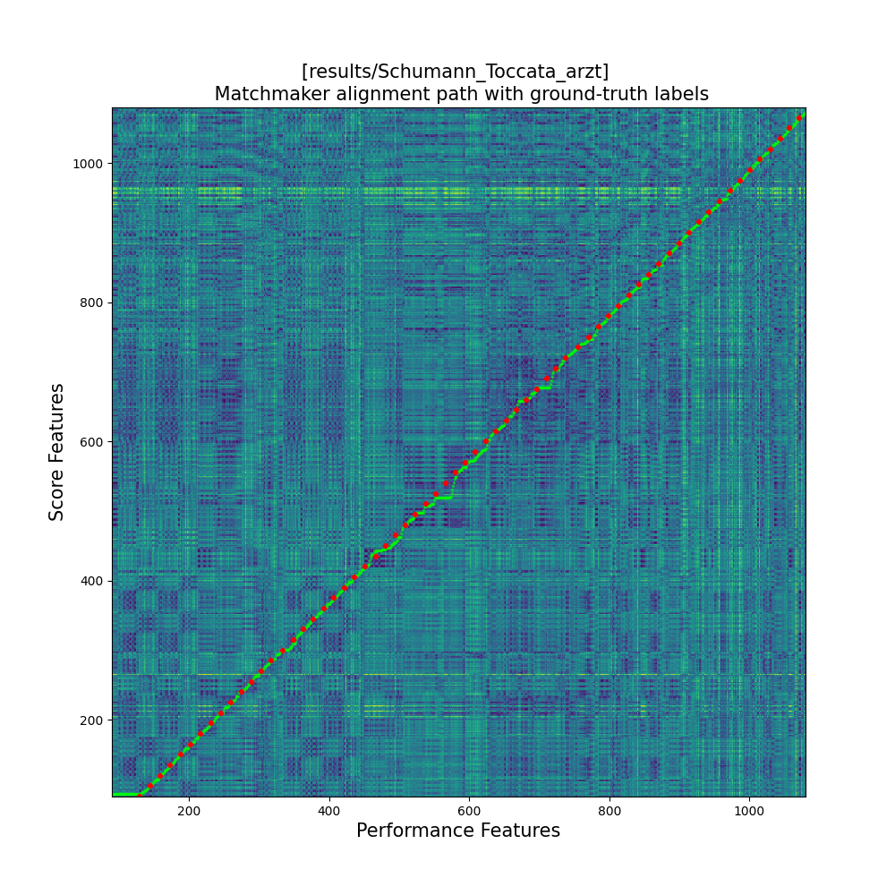
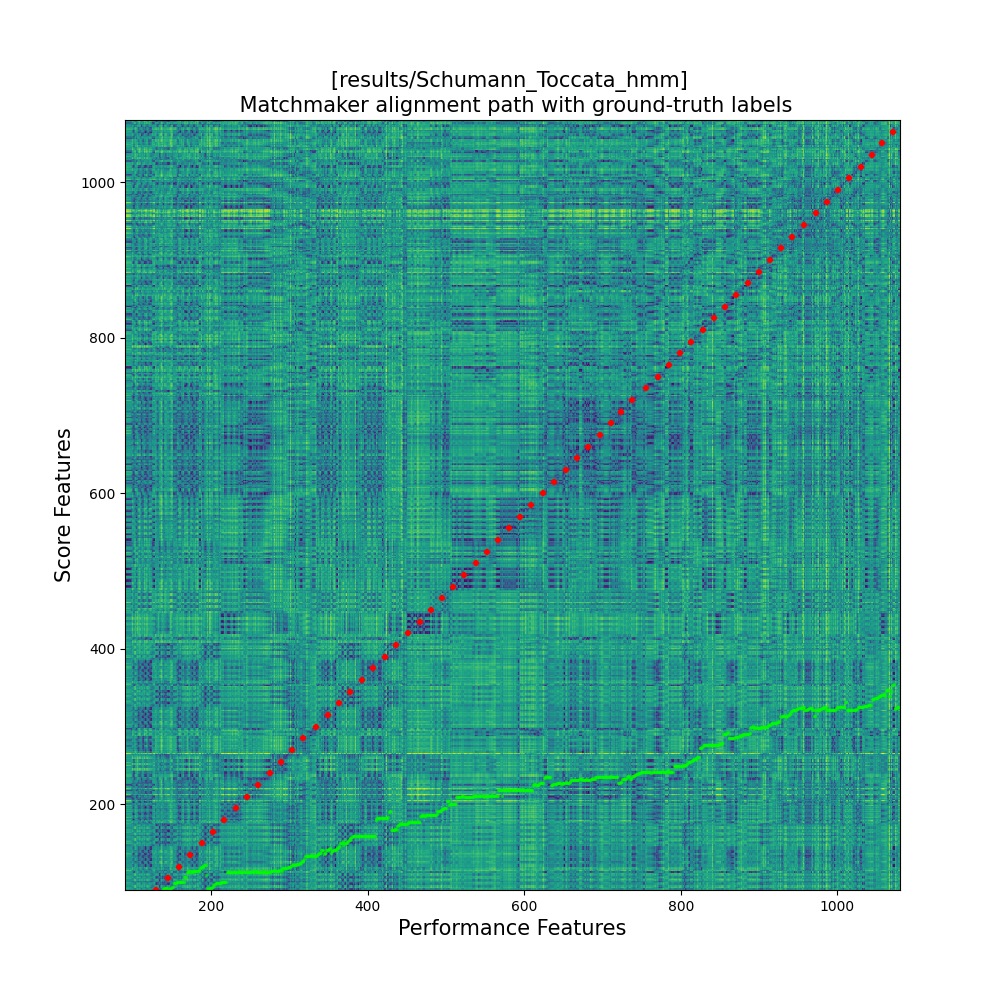

The following examples showcase the performance of different score followers. Each row corresponds to a performance (i.e., an audio file), where the beats have been transferred (i.e., the click sound) based on the alignment. Note that this is not beat tracking per se—the score followers do not predict the beat locations. Instead, the beat annotations from the ground truth (in the leftmost column) are transferred using the predicted alignment. Each plot shows the warping path, with the beat positions indicated by red dots.
| Ground Truth | OLTW Dixon | OLTW Arzt | HMM |
|---|---|---|---|
|  |  |  | |
|  |  |  | |
|  |  |  |